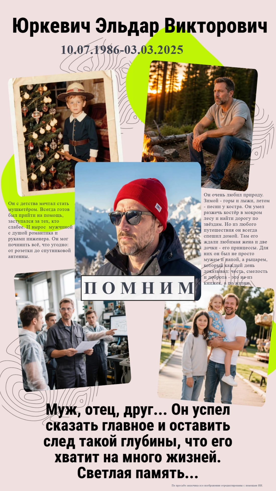

Родные и близкиеС любовью и благодарностью
Ты навсегда останешься в наших сердцах. Спасибо за всё тепло, которое ты нам подарил.
Страница светлой памяти
10.07.1986 — 03.03.2025
Человек, чья любовь, доброта и сила навсегда остались в сердцах родных и близких.
«Муж, отец, друг… Он успел сказать главное и оставить след, которого хватит на многие жизни».

Жизненный путь
В каждой жизни — множество дорог, встреч и мгновений, которые продолжают жить в памяти близких.
Эльдар с детства отличался любознательностью, добрым сердцем и стремлением помогать другим. Он умел поддержать словом и делом, не проходил мимо чужой беды и всегда находил время для тех, кто был ему дорог.
Он любил природу, долгие прогулки и путешествия. Особенно ценил простые семейные вечера, разговоры по душам и моменты, проведённые рядом с близкими.
Для семьи он был надёжной опорой, любящим мужем и заботливым отцом. Его чувство юмора, мудрость и тепло навсегда останутся частью семейной истории.
 Мгновения, которые остаются с нами
Мгновения, которые остаются с намиСемейный архив
Разные годы, дорогие лица и мгновения, к которым хочется возвращаться.
Как найти место
Точное расположение места захоронения — чтобы родные и близкие могли найти дорогу и прийти почтить память.
Название кладбища и точное расположение будут указаны семьёй.
Координаты места захоронения пока не добавлены.
Открыть маршрутТёплые слова
Здесь можно оставить слова памяти, поделиться историей или написать то, что хочется сказать близким. Каждое искреннее воспоминание — часть истории человека.
Ты навсегда останешься в наших сердцах. Спасибо за всё тепло, которое ты нам подарил.
Знак памяти и любви
Пусть этот маленький огонёк станет тихим знаком того, что его помнят.
Зажжено свечей: 0 / 2
Можно зажечь не более двух свечей.
Возьмите огниво и поднесите его к фитилю.
Нажмите на огниво — оно откроется. Затем перетащите его к верхушке свечи.